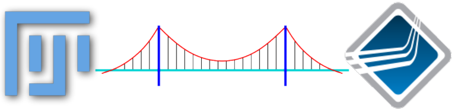
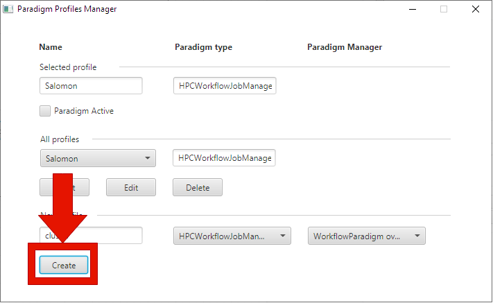
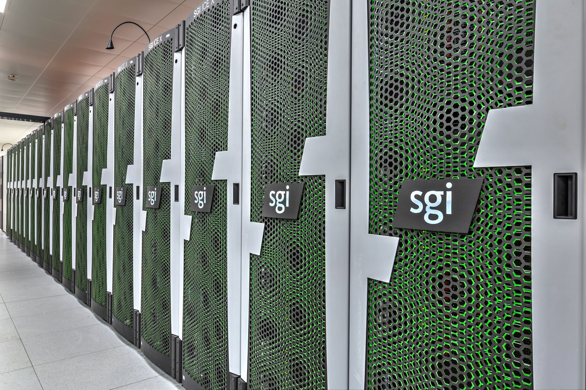
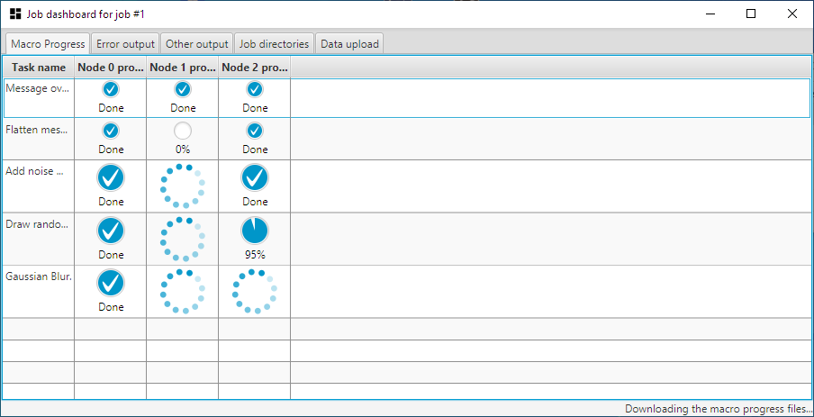
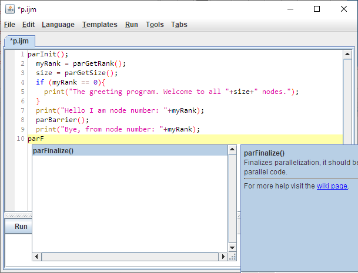

Bridging Fiji and OpenMPI for Easy-to-Use Parallel Processing of Images

Outline
- Gain access to remote HPC
- Installation and configuration of the plugin
- Upload, run and download macros remotely
- Monitoring progress, output and error reporting
- Parallelization of a Macro script
- Demonstration how to parallelize macros
- Advanced parallelization of processing on large images by use of MPI-aware Ops
Workshop structure
- Each part of the workshop is hands-on.
- The participants are expected to first attempt to work through the practical worksheets.
- Follow the link in the presentation to open the worksheet.
- The worksheets will then be presented and explained by the presenter.
Gain access to remote HPC
Gain access to remote HPC
Installation and configuration of the plugin
Installation and configuration of the plugin
Installation and configuration of the plugin

Upload, run and download macros remotely
Upload, run and download macros remotely

Monitoring progress, output and error reporting
Monitoring progress, output and error reporting

Parallelization of a Macro script
Parallelization of a Macro script

Demonstration of a real parallel macro
Demonstration of a real parallel macro
Advanced parallelization of processing on large images by use of MPI-aware Ops
Advanced parallelization of processing on large images by use of MPI-aware Ops
Discussion
- Recap
- Gain access to remote HPC
- Installation and configuration of the plugin
- Upload, run and download macros remotely
- Monitoring progress, output and error reporting
- Parallelization of a Macro script
- Demonstration how to parallelize macros
- Advanced parallelization of processing on large images by use of MPI-aware Ops
Thank you!